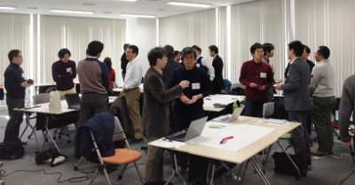
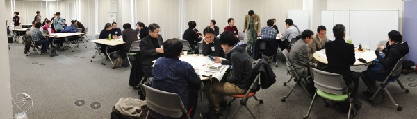
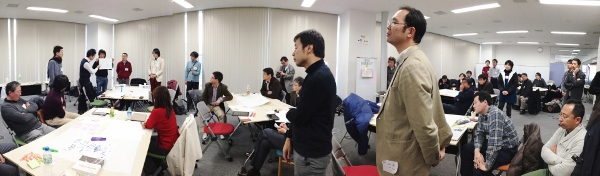
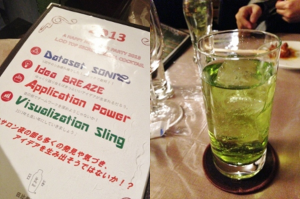

1月, 2013
技術コラム第10回：LODチャレンジ2012 LODサロン参加レポート
1/12に東京・田町で「LODサロン」と題した参加者交流イベントを開催しました。当日参加されたIMJ加茂さんが参加レポートを寄稿してくださいました。
今回、LODチャレンジ2012作品募集の〆切間際の大きなイベントとして開催されましたLODサロンに参加させていただきました。このイベントはLODに関心のある方であればだれでも参加できる交流イベントということで、エンジニアでなくても何か新しい出会いやきっかけが得られるのではないかと期待して参加させていただきました。
オープニングセッションの後には、隣り合わせた2名の方と自己紹介を行う“チェックイン”が行われました。すこし受け身の姿勢で参加していた私にとって、今回の主役は“私たち参加者”で、積極的に交流していくことに意味があるということを実感することができ、後半のトークセッションを有意義な時間にできるきっかけになりました。その後、賛同企業や団体、希望者からのショートプレゼンテーションののちに、全員参加のライトニングトークをひとり1分間。参加者全員が自己紹介やLODへの興味関心などを話すのですが、全員が参加することを通じて参加意識が高まっていくのを感じました。

“チェックイン”では、隣り合わせた人と自己紹介
メインのフリートークタイムでは、LODチャレンジのエントリー部門のテーマにあわせ、「データセット」「アイデア」「アプリケーション」「ビジュアライゼーション」の4つのテーマのうち、同じテーマに関心の高いメンバー4，5名に分かれてのフリーディスカッションを行いました。各グループとも自由なトークが繰り広げられていた様子で、クロージングセッションでの各グループの発表も大変興味深く、時間があっという間に過ぎていきました。

グループに分かれてフリーディスカッション

成果発表の様子。皆さん、真剣です
LODサロンは、普段知り合うことのないようなさまざまなバックボーンを持つ参加者同士が、LODという取り組みに関する興味関心のみで繋がり、リンクしていくとても新鮮で刺激的な空間でした。その後の懇親会では、なんとLODチャレンジを記念したオリジナルカクテルをいただきながら、さらにエキサイティングな時間を過ごすことができました。

LODチャレンジのエントリー部門に合わせたオリジナルカクテル
LODチャレンジの作品募集は締切が迫っていますが、今後もこういったイベントには積極的に参加させていただきLODへの取り組みに関わっていきたいと思います。ありがとうございました。
株式会社アイ・エム・ジェイR&D室 加茂 春菜
技術コラム第9回：国内で広がるオープンデータの取り組み
新年早々に，「技術コラム第6回：昨今のオープンデータアイデアソン・ハッカソン、コンテストの広まりが目指すもの ～2012年の振り返りと2013年の展望～」と題したブログを掲載しました．オープンデータのイベント開催が相次ぐなど，国内外の動向を俯瞰できるような，まとめページを作らねばと思っていましたら，すでにリストを作成し公開されているサイトがあります．
1件目は，国際大学GLOCOM客員研究員／社団法人クラウド利用促進機構アドバイザーの林 雅之氏が執筆されているブログです．クラウドサービスをテーマに，関連する様々な最新動向を取り上げており，オープンデータやオープンガバメントに関する事例も紹介されています．一例をご紹介します．政府のIT戦略本部が2012年7月4日に「電子行政オープンデータ戦略に関する提言」を公表しました．本戦略にもとづいて，各自治体がオープンデータの活用に向けて取り組みを立ち上げつつあります．現在，自治体で取り組まれている事例が、実際に公開されているデータへのリンクと合わせて紹介されていています．
- 自治体におけるオープンデータ活用事例
http://blogs.itmedia.co.jp/business20/2013/01/post-97ab.html
また，国内外において，オープンデータを推進する団体およびサイトがコンパクトにまとめられています．LODチャレンジの他，本チャレンジの趣旨に賛同下さった，スポサー，データ／基盤提供パートナー，サポーターの企業・団体も紹介されています．
- 国内外のオープンデータを推進する団体・サイトのまとめ(2013年1月現在)
http://blogs.itmedia.co.jp/business20/2013/01/20131-4243.html
2件目は，Open Knowledge Foundation 日本グループの東 富彦氏によるブログです．欧米を中心に32カ国から収集した400あまりのオープンデータ活用事例がまとめられています．オープンデータの活用方法や，アイデアソン・ハッカソンの成果を調べるのに役立ちますね．
- オープンデータ活用事例に開発者情報などを追加しました
http://okfn.jp/2013/01/23/opendatacases2/
いずれも，これから Linked Open Data やオープンデータに取り組まれる方や，LODチャレンジへ応募する作品づくりに取り組まれる方にとって，参考になるサイトとなっています．これらの事例や公開データをぜひご覧になってみてください．もしデータを活用したアイデアがひらめきましたら、冷めないうちに作品としてのご応募もお忘れなく！
応募締切カウントダウン：残り7日です!
LODチャレンジ Japan 2012 への応募締切1/31(木)まで、残り7日間となりました。応募をご検討中の皆さま、締切直前は応募サイトが混みあうことが予想されます。早めの応募をご検討ください。
LODチャレンジ2012では、作品を募集しております4部門の各表彰に加えて、Platinumスポンサー賞、データ／基盤提供パートナー賞の各賞の表彰を行います。作品づくりには、データ／基盤パートナーから提供のリソースの積極的な活用もご検討ください。サーバをお持ちでない方でも作品づくりと公開に活用いただけるリソースもございます。各リソースの利用方法は、こちらに掲載しております。なお、表彰についてはこちらをご覧ください。
1/25(金)、26(土)には、「横浜オープンデータハッカソン −LODチャレンジデー in 横浜−」が開催されます。参加者の皆さんで力をあわせてアプリやサービスをその場でつくり、LODチャレンジ2012の作品として応募を目指すイベントです。主催は横浜オープンデータソリューション発展委員会で、LODチャレンジが共催しています。一部だけの参加、横浜市民でない方の参加も可能ですので、ぜひお申し込みください。
最後に、1/23(水)19時現在の応募状況をお知らせします。昨年度の同時期を上回る62件の作品をご応募いただいております。LODチャレンジでは、昨年度LODチャレンジへの応募作品や、今年度の応募作品(エントリーから部門を選択ください)を再利用することを推奨しております。新たな工夫や価値を盛り込んだ作品をご応募いただくことにより、作品どうしをつなげていきましょう。
皆さまのご応募をお待ちしております。
作品応募状況 (1/23(水)19時現在)
| データセット部門 | 33作品 |
| アイデア部門 | 14作品 |
| アプリケーション部門 | 7作品 |
| ビジュアライゼーション部門 | 8作品 |
| 計 | 62作品 |